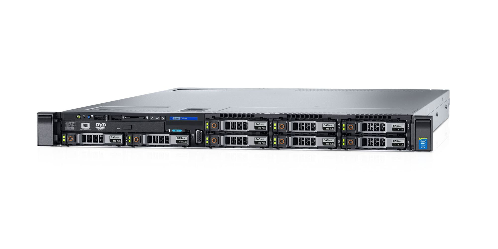
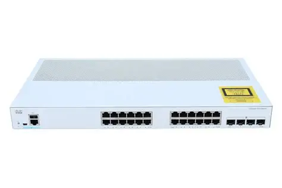
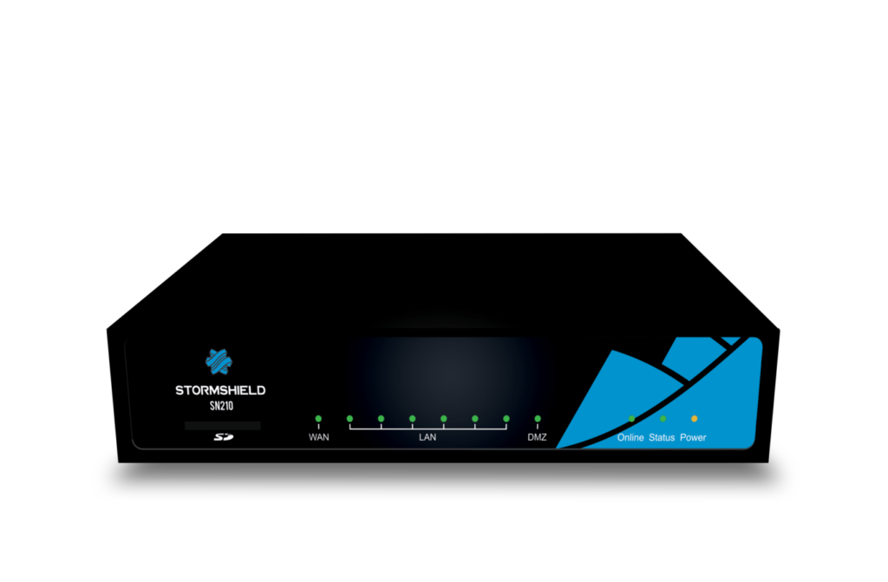
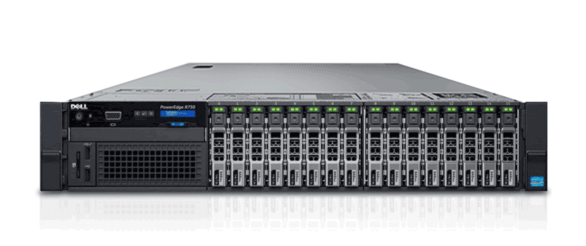

🧾 Inventaire matériel – BESAFE (version publique)
Cette page présente un inventaire simplifié du matériel déployé dans l’infrastructure BESAFE.
📘 Source officielle :
/25INFNA-LICISASRS-1AN/Entreprise Pédagogique/Inventaire BeSafe.xlsx
🧩 Catégories d’équipements
| Catégorie | Rôle principal | Exemple d’équipement |
|---|---|---|
| Serveurs | Hébergement des VMs et Cluster | Dell PowerEdge R730 |
| Switchs | Commutation VLAN / trunk inter-hyperviseurs | Cisco Catalyst 1000 Series |
| Firewall | Sécurité périmétrique, routage inter-VLAN, NAT, VPN | Stormshield SN210 |
| NAS / Stockage | Datastore iSCSI, sauvegardes, stockage partagé | Dell PowerEdge R630 |
| Onduleur (UPS) | Protection électrique / arrêts automatiques | Eaton 5PX |
🧱 Détails par catégorie
🖥️ Serveurs physiques

- Modèle : Dell PowerEdge R630
- Processeur : 24 CPUs x Intel(R) Xeon(R) CPU E5-2690 v3 @ 2.60GHz
- Mémoire : 14*16 Go
- Stockage local : 6*240 Go SSD
- Cartes réseau : 4×1 GbE + 2×10 GbE
- OS : VMware ESXi 8.0
🌐 Switchs réseau

- Modèle : Cisco Catalyst 2960-24TT
- Ports : 24 × 1 GbE + 4 × SFP
🔥 Firewall / Sécurité

- Modèle : Stormshield SN210
- Interfaces : WAN / LAN / DMZ
💾 iSCSI / Stockage

- Modèle : Dell PowerEdge R730
- Processeur : 24 CPUs x Intel(R) Xeon(R) CPU E5-2690 v3 @ 2.60GHz
- Mémoire : 8*16 Go
- Stockage local : 2480 Go SSD - 34 To HDD
- OS : Windows Server 2025
🧾 Mise à jour de l’inventaire
- Modifier le fichier source
Inventaire BeSafe.xlsxsur Easi / Nextcloud. - Vérifier la cohérence avec le Plan IP et les schémas.
- Mettre à jour cette page et, si nécessaire, les photos associées dans
/assets/.